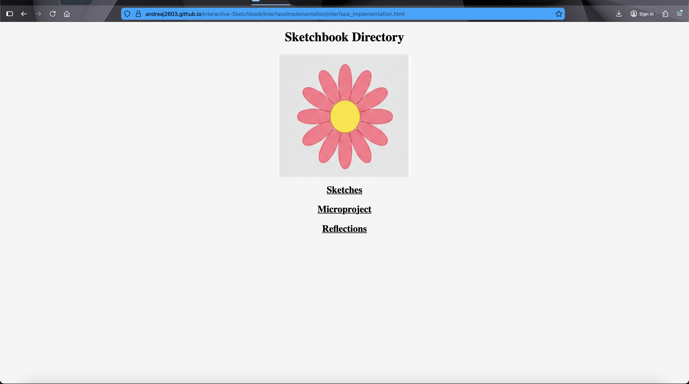
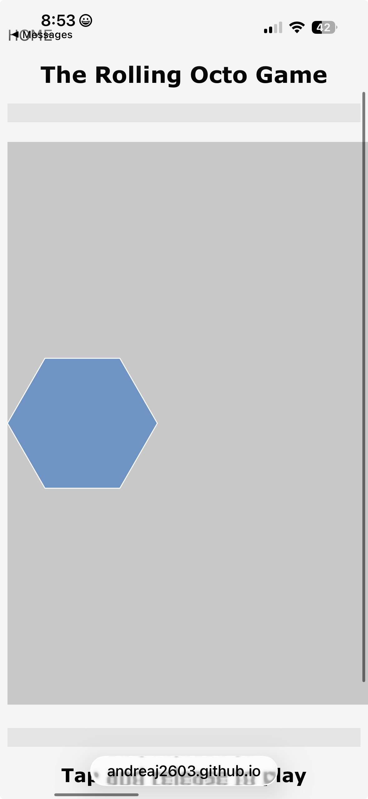
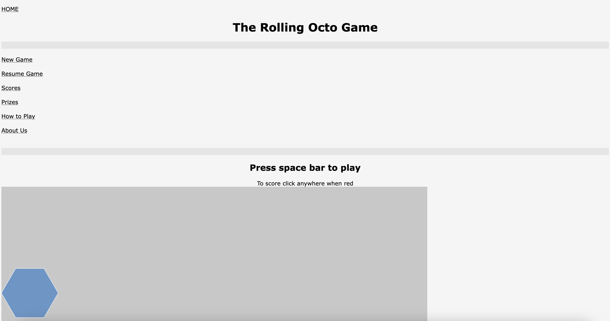
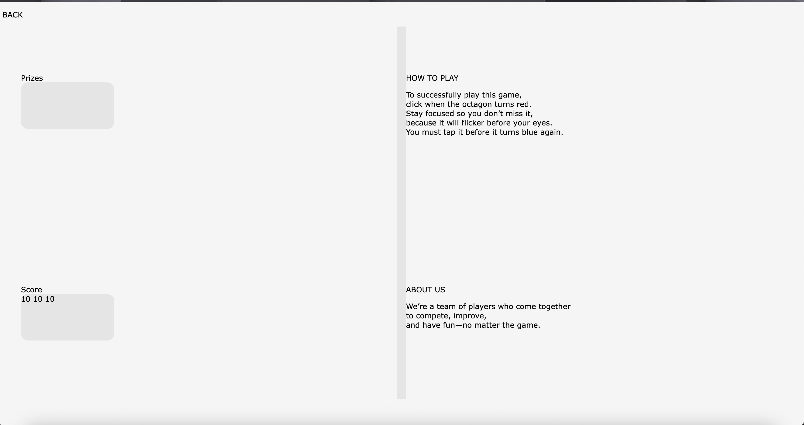

What translated cleanly from Figma?
I think translating the design from Figma into CSS was challenging. I think the game concept is what was translated most clearly.
What broke?
The system broke when I tried to transfer the same font from Figma into CSS. The mobile version also does not display the font I chose, and the screen size was not correct. I could not change it.
What surprised you?
The surprise was that css is more complicate and nothing like java script.
What structural assumption did code expose?
The structural assumption the system exposes that most of the figma design cannot be translated to css without a lot of work and adjustment.
What would you revise with more time?
If I had more time I would expand it more and I also would redesign it as well. The concept is fun but the layout is not intuitive.
If something is failing, explain it. If the result feels chaotic or frustrating, reflect on that.
I honestly spent more time searching for code solutions and testing them than actually implementing changes or focusing on the game’s aesthetics. It was my desire to submit a more refined work.
Most of the process of translating from figma to css fails. I was not able first to make the code work in general. The java script was insane with the position of the page. That drove me insane.
I tried using a Figma plugin, but I spent hours trying to figure out how it worked.
I also had issues with the menu and with recreating the same layout from Figma in CSS. I tried to google codes and it was not a successful try and I then moved on without fixing. The pages are not really showing the design from figma.(How to play link)
The font type was also an issue because I was not able to change it correctly, so I spent time researching solutions online. In the end, I decided to use the suggested web-safe font instead.
Through this process all I wanted was to have the code work and be able to submit. I am not happy about it and I just wished I had more experience with coding so I would have done a more professional work at the end.
1-Mobile JavaScript Size not able to fix it.


